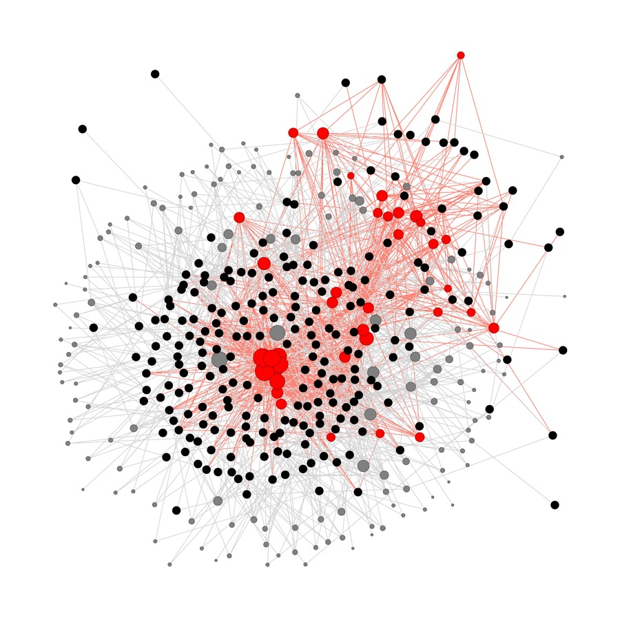

Trends in Cognitive Sciences · 2025
The Psychology of Virality
Trends in Cognitive Sciences · 2025
The Psychology of Virality PNAS · 2021
Out-group animosity drives engagement
PNAS · 2021
Out-group animosity drives engagement PNAS · 2024
GPT is an effective tool for multilingual psychological text analysis
PNAS · 2024
GPT is an effective tool for multilingual psychological text analysis Nature · Registered Report
Testing the causal impact of social media around the globe
Nature · Registered Report
Testing the causal impact of social media around the globe Preprint · 2025
The Impact of Sycophantic AI on Attitudes and Decisions
Preprint · 2025
The Impact of Sycophantic AI on Attitudes and Decisions Nature Human Behaviour · 2023
Accuracy and social motivations shape belief in (mis)information
Nature Human Behaviour · 2023
Accuracy and social motivations shape belief in (mis)information Perspectives on Psychological Science · 2023
People think that social media platforms do (but should not) amplify divisive content
Perspectives on Psychological Science · 2023
People think that social media platforms do (but should not) amplify divisive content
Preprint · 2025 Unfollowing partisan accounts reduces out-party animosity and increases social media satisfactionSocial Media
Virality, polarization, misinformation, and interventions to fix our feeds.
TiCS · 2025
Preprint
PNAS Nexus · 2022
TiCS · 2021
Artificial Intelligence
How humans interact with AI — and how AI can advance psychological science.
NHB · 2026
A reporting checklist for LLMs in behavioural science
Nat Comp Sci · 2025